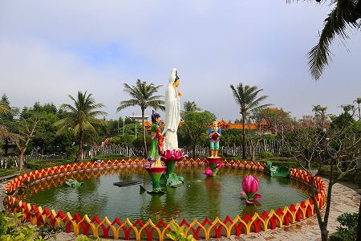

雲林県の馬鳴村というところにある
五年千歳公園に行ってみた。
今回の旅の友である台湾迷路案内に写真が出ていて、その写真からただものならぬ気配が発せられていたので行ってみることにしたのだ。


斗南の駅からタクシーで向かう。
帰りの足もなさそうなので（バス路線を検索したら何故か斗南の駅まで3時間半かかるという…）、公園を一巡りする間、運ちゃんに待っててもらうことにした。
公園は
馬鳴山鎮安宮という道教寺院の向かいにある。
そのお寺から見た風景。
遠くに極端に傾斜が急な太鼓橋が見える。
外から見てもそんなに広そうな公園ではないので、まあ写真撮りながらでも1時間もあればいいかな、と思い運ちゃんに1時間待っててもらうことにした。
運ちゃんはあいよー、てなもんでさっさと車の中でお昼寝タイム。
さて、帰りの足も確保したし、公園へと向かおう。
入り口付近。
入り口には2本の柱が建っている。
巨大な龍が巻きついた柱には「五年千歳公園」と書かれている。
おお、李登輝元総統の筆ではないか！
象さんが邪悪な目でにらんでいる。
で、園内図。
池の周辺に岩山が築かれ、その合間合間に色々なアイテムが配されているようだ。
主要アイテムは4つ。
観音サマ、馬の像、太鼓橋、龍の船。
これらを眺めながら庭園を散策する感じなのだろう。
改めてこの公園の規模を確認しておこう。
↑赤線内が公園である。
向かいの鎮安宮と比べてもさほど大きな公園でないことはお分かりいただけよう。
南北100ｍ、東西130ｍほどの公園だ。
東京ドームと重ねるとこんな感じ。
ブーマーが入り口でホームラン売ったら反対側まで届いちゃう感じの規模なのだ。
ところが公園入口で配布されていた案内図を見ると様子がおかしい。
経路が複雑なだけでなく、滝や洞窟などのチェックポイントが74ヵ所もあるのだ。
え？高々100×130ｍの公園に？
兼六園やディズニーランドならともかくこんな小さな公園に？
案内図を見れば(それにしてもこの案内図、色とか地図のデザインとか堪んないね）、洞窟や滝や池などがてんこ盛りの御様子。
いやいやいや、そんなの無理っしょ。
きっとミニチュアの滝とか洞窟とかを眺めるだけでしょ。
でも太鼓橋とかリアルにあるしなー。
まあ、とりあえず行ってみましょう！
入り口入ってすぐに蒋介石がお出迎え。

そしてしばらく進むと丸い池の中に
観音様が立っている。
毒々しい色の蓮の花やキャベツの葉っぱみたいなオブジェもポリで造ってある。かなり力がこもっている。
足元の男の子に語りかけるように見下ろす観音サマ、その目線は妙にねっとりしているぞ。

かと思えば岩の合間から恐竜が現れたりしてビックリするのだ。
池の畔を歩いていく。早くも疲れてきたが、この東屋のセンスたるや！休めませんよ…。
それまで比較的平坦で視界が広かったのだが、段々岩が増えてきてハードな雰囲気になってきた。
よしよし、面白くなってきたぞ。
浅い洞窟に池の水を引き、幻想的な雰囲気を醸しだしている。
その岩場には仏像が並べられていて、かなり私好みの空間に仕上がっている。
イイじゃないか！
この辺りは入り口と真逆のエリア。つまり一番奥まで来てしまったわけだ。
僅か十数分で一番奥まで来ちゃったけど、大丈夫ですか？早くないっすか？
まだ、74ヶ所のうち18番までしか来てませんけど。
しかし、歩き進んでいくうちに、段々この公園の様子が判ってきた。
この公園は一方通行の回遊式庭園にはなっているものの、その経路は複雑で、公園内を縦横に行ったり来たりするシステムになっているのだ。
しかもその経路が重なって迷うことが無いように
経路自体が人工的な築山などで高低差が設けられ、橋などで立体交差しているのだ。
これは思ったよりも複雑で時間がかかる案件だぞ…。覚悟せねば。
岩と岩の合間を通り抜け、ぐんぐん進んでいく。
高台に立つと入ってきた入り口や鎮安宮も見える。
石をマジ投げすれば届きそうな距離だが、再びあそこに到達するのはいつになるのだろう…。
眼下に太鼓橋が見えるが、今はまだ渡らない。というか渡れない。チェックナンバーが60番ですからね！
グラウンドレベルに戻って来てぐにゃぐにゃ曲がった橋を進む。
↑凄い飛距離の小便小僧を眺めつつ…
えええ！まだ20番？！
途中、歪んだキノコのオブジェなどがあって、段々精神的にもミニマルになっていく感じ…。
橋の欄干のビビッドな色彩も最早こちらの精神状態を鼓舞するだけの役割は果たせまへん。
ちなみにこの庭園内の築山や岩は人工的に組まれている。
基本的には自然石を積み上げているのだが、一部、コンクリートや擬木、ポリなども組み合わせてあるので、どこか嘘っぽいというか非現実的な感じがするのだ。
滝もミニチュアじゃなくて立派なものでした。
高低差の激しい築山群を抜け、再び平地に戻ってきた。疲れたー！
しかし、息つく間もなく再び経路は高さを伴ってくる。
向かう先にそびえたつのは…
黄金の馬の像である。
この築山は馬龍山といい、ここの地名の馬鳴村、あるいは向かいの馬鳴山鎮安宮にちなんだものなのだろう。
いわば、
この公園のシンボルといえよう。
…で、その馬自体のシンボルはというと…
立派でした！
馬龍山を降り、平坦な遊歩道を歩く。この辺はアップダウンがなく、歩きやすいのでサクサク進める。
…というわけでもう55番！もう少しだ。
そしていよいよこの公園で一番目立つ太鼓橋にたどり着いた！60番！
太鼓橋は摩天大橋という。なるほど下から見ると天に向かっているようだ。
頂上まで一気に登ってみる。
絶景也。
先ほど登った馬龍山の馬も祝福してくれているようではないか。ゴメンな、さっきはチンチン覗いちゃって。
最初に見た観音サマ。
こうやって上から見ても大きいなあ。
さらに入り口付近。
おおお、昼寝を決め込んでいたはずの我がタクシーの運ちゃんが入り口付近でウロウロしているではないか！
そうか！1時間で戻ると言っていたのにすでに1時間は軽く経過している！
橋の上から手を振ると、運ちゃんもこっちに気づいてくれた。
声をかけるには微妙な距離だし、そもそもコトバ通じないからゼスチュアーで「思いの外時間かかってるのでもう少し待ってて！」と腕時計を指さしてごめんごめんポーズ。
運ちゃんも表情は読めないが、「ああ、いいよいいよ」という雰囲気。いやすまんのう。
高いところから改めて見ると、この公園の複雑さがわかる。
しかも高低差だけでなく、水上通路や滝、水車やオブジェなどを所々に配置し、
客をなるべく飽きさせないように配慮しているのだ。
まあ、その崇高な配慮にも気付かず「まだ〇〇番かよー」とか毒づいていたのだが、ここ天上界にいるとそんな
汚いお心なんて十万億土の彼方へグッバイ、なのである。
さて眺望も楽しんだし、再び下界へと降りますか。
ラストは巨大な龍、のような船のような。
ここへは水中トンネルを経由して中に入る。
龍の内部。
一応宝物や仏像が飾ってあった。
さらに隠し通路のようなところから別の水中トンネルへ。
そんなこんなで、いよいよフィナーレが近づいてきた。
想像以上に歩いたし、疲れる散策だった。
まるで
仙界巡りを疑似体験したかのような気分だ。いや、元々そういう意図の施設だったのか？
おおお、出口だ。やったー。
出口では私の健闘を祝うかのように運ちゃんが笑顔で迎えてくれた。
お待たせしてしまって、すまんのう。
それでも一緒にお参りに行こう、と鎮安宮へと誘ってくれた。優しいのう。
次へGOGO！